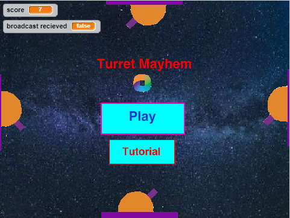
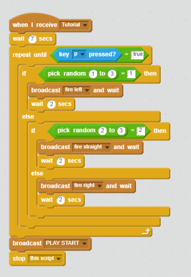

Scratch Game
Turret Mayhem

A run and dodge game that stresses pattern decoding and endurance.
In Turret Mayhem, your main goal is to avoid the red bullets being
fired by the four turrets on the walls which randomly switch between
their four directions.
Some great hurdles that I surpassed in the game's creation was
getting the turrets to randomly turn at certain intervals and to broadcast
how the bullets were to be shot. However, I remember being stumped
in the process of registering when the player model touched a bullet,
the game was to acknowledge it with a loss screen (which I also struggled
to create).

Decide how to spend your day in the life of a teenage boy while, at
the same time, defending your home from whoever may break in! Do you
go out with your trouble-making friends or do you stay home alone?
When it comes to writing stories, I always try to think above and beyond
to keep the content interesting and reeling. However, I can't possibly code
all my imaginations out within a week, so compacting my ideas was the first
task along with where each turning point of the story would best be placed.
A game development company named Telltale Games is popularly known for their
"Walking Dead" Series where the player steers the storyline by deciding
events that could leave a character(s) compromised from the story
permanently. This game genre caught my interest on sight which helped me
create my own story from watching so many captivating playthroughs. This
project focused mainly on the "def" funtion, which allowed me to create
my own function using other functions embed in the python program. By
defining new functions, each new scene could more easily be distinguished
instead of having my code run from top to bottom like a ball in a pinball
machine.